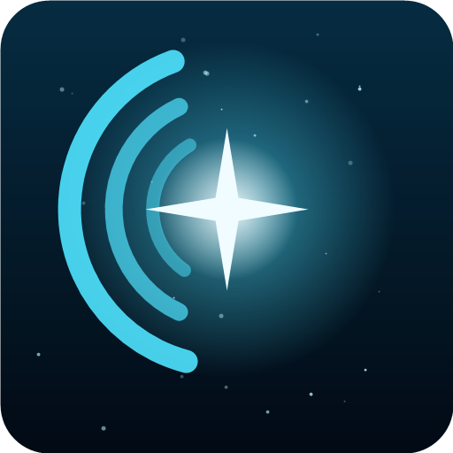
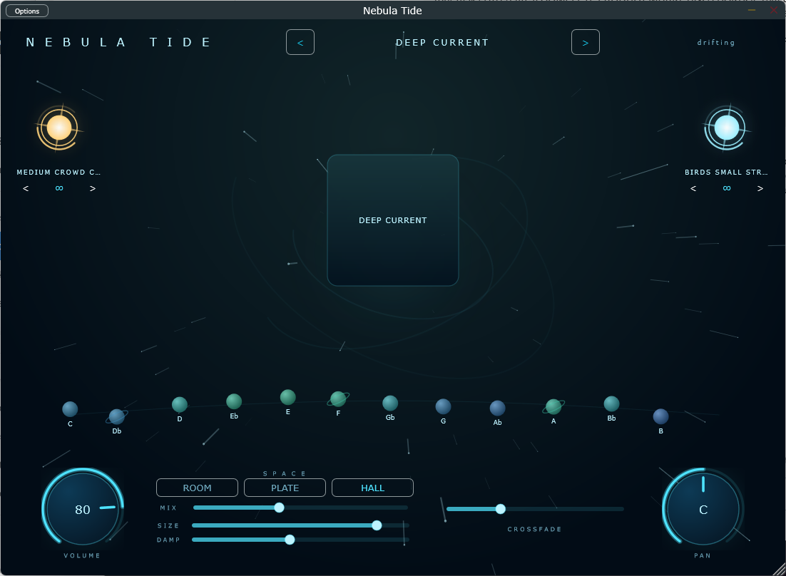
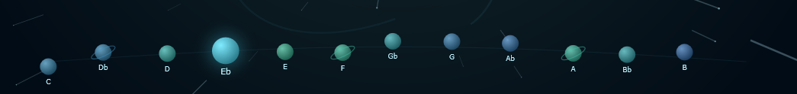
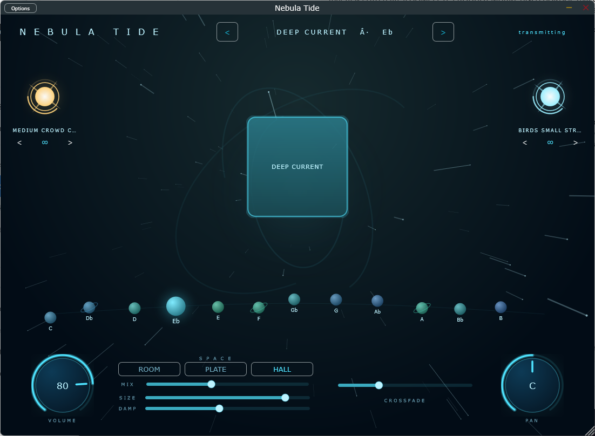
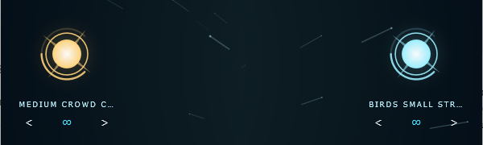
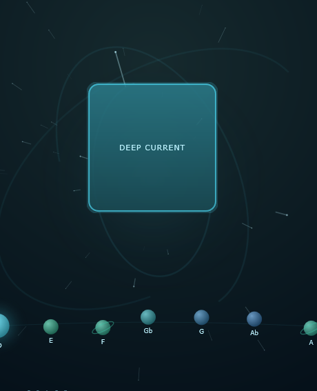
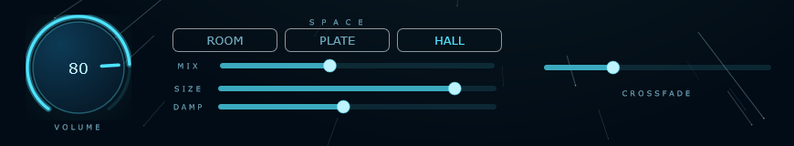

Nebula TideNebula Tide plays endless, seamless drone pads — real recordings in all twelve keys — inside an interface that’s alive. One click, infinite atmosphere.
Windows standalone and VST3 · macOS and iPad planned

Synths want programming. Loop packs end and click. A YouTube video is in the wrong key with an ad in the middle of your set. All anyone actually needs is a beautiful bed of sound that starts when you press it and doesn’t stop until you say so.
Twelve keys
Every preset ships as twelve separate studio recordings, one for each key — nothing is pitch-shifted anywhere in the engine. Tap a planet and the pad crossfades into a recording that was actually performed in that key, formants and character intact.

The living interface
Press the pad and the whole room answers: the square lights and pulses, the starfield accelerates with the output level, the aurora arcs turn. The status in the corner stops saying drifting and starts saying transmitting. It reads as an instrument, not a panel of controls.

Two stars
A gold star on the left for effects — claps, prayers, swells. An ice-blue star on the right for textures — wind, rain, birds, a room full of people. Both loop on their own, both survive a preset change, and both fade out gracefully when the drone stops. Drag a star vertically to set its level.

One stage
No browser, no grid, no page of tabs. The stage carries everything you need mid-service: which preset is loaded, which key it’s in, and whether sound is leaving the app. Arrow left or right and the next preset hot-swaps under the crossfade — you never hear the seam.

Space
Room, Plate and Hall — each tuned to the character of the classics rather than left as a generic algorithm. Mix, Size and Damp are there when you want to go further, and every preset arrives with its own sensible defaults already dialled.

Pads, keys and whole presets change through an adjustable crossfade, half a second to twelve. Live use demands it: the congregation should never hear the transition, only the new key.
Looping is sample-accurate rather than approximate, so a pad can run for a whole service or a whole session without a click, a gap, or a fade you didn’t ask for.
Presets live in a folder the app reads at launch. A new sound pack is a folder you drop in — no installer, no app update, no waiting for a release.
The same engine runs standalone on Windows or as a VST3 inside your DAW, sharing one preset folder. macOS and iPad are next from the same codebase.
Arrow to the sound you want. One square, centre stage.
Touch the planet for tonight’s key. The pad crossfades into that recording.
Press the square. It doesn’t end until you end it.
That’s the whole manual.
| Pad loop packs | Synth pads | YouTube pads | Nebula Tide | |
|---|---|---|---|---|
| All twelve keys, really recorded | Rarely | Synthesised | No | Yes |
| Seamless infinite loop | Often clicks | Yes | Ends, or an ad does | Yes |
| One-click FX and textures | No | No | No | Yes |
| Ready without programming | Yes | No | Yes | Yes |
| VST3 and standalone | Files only | Plugin only | No | Yes |
| Safe to put on a stage | Depends | Yes | No | Yes |
The player is the app; the sounds are the product line. Prices are still being set, so here is the shape of it rather than a number we would have to change later.
The player
The instrument itself, standalone and VST3, with the first preset included — twelve keys of it.
Sound packs
Each pack is a set of presets in all twelve keys. Buy it once, drop the folder in, keep it. No subscription.
Bundle
Every pack available at release, plus the ones that land during the launch window.
Beta testers hear the pricing first. Ask for the beta and you’ll be on that list.
Nebula Tide is in private testing on Windows. Tell us where you’d use it and we’ll send you a build.